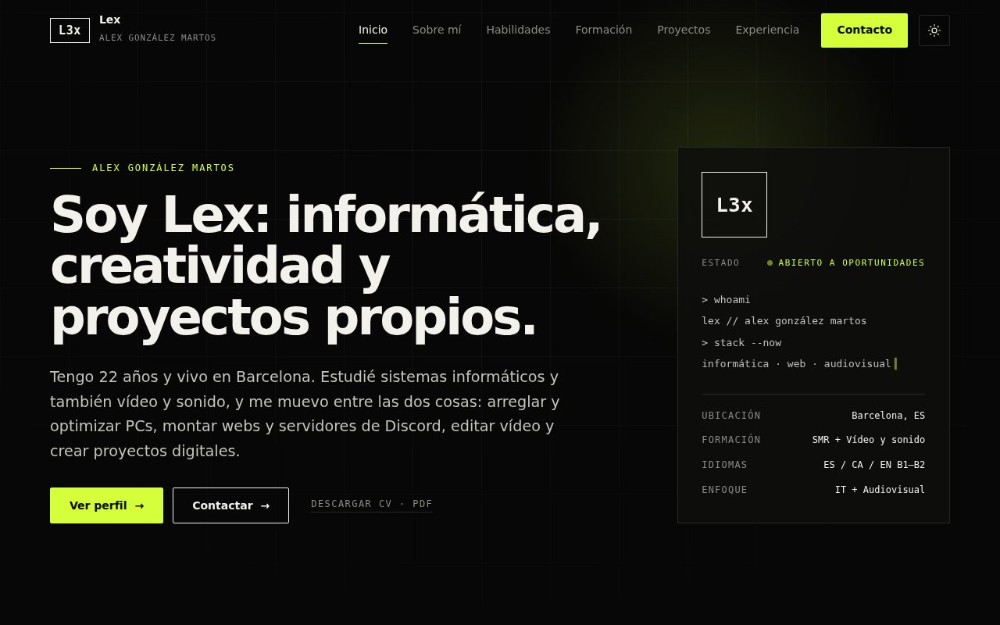

 Proyecto 01 · Web personal Mi currículum digital y portfolio Qué esEsta misma web, con una página para cada apartado de mi perfil. ObjetivoPresentarme profesionalmente y reunir en un solo sitio mi perfil, mi formación, mis habilidades y mis proyectos. Qué incluyeModo claro y oscuro, transiciones entre páginas, pantalla de carga con sonido, diseño adaptable a móvil y navegación por teclado. HTMLCSSJavaScriptGitHub Pages Ver la webVer código